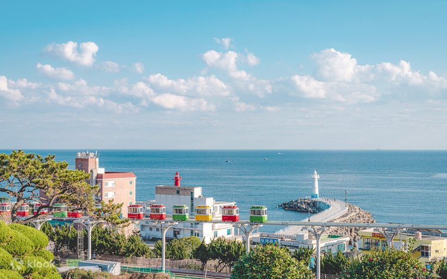
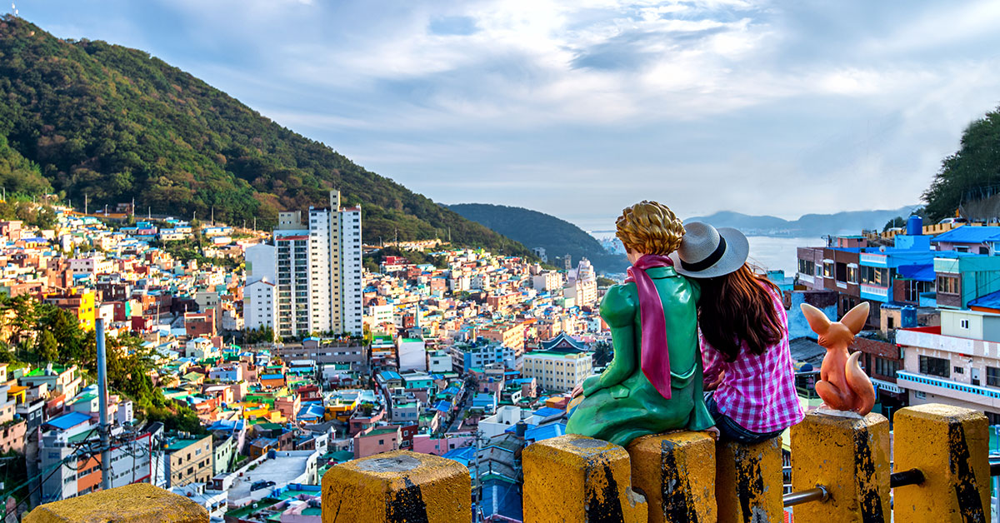
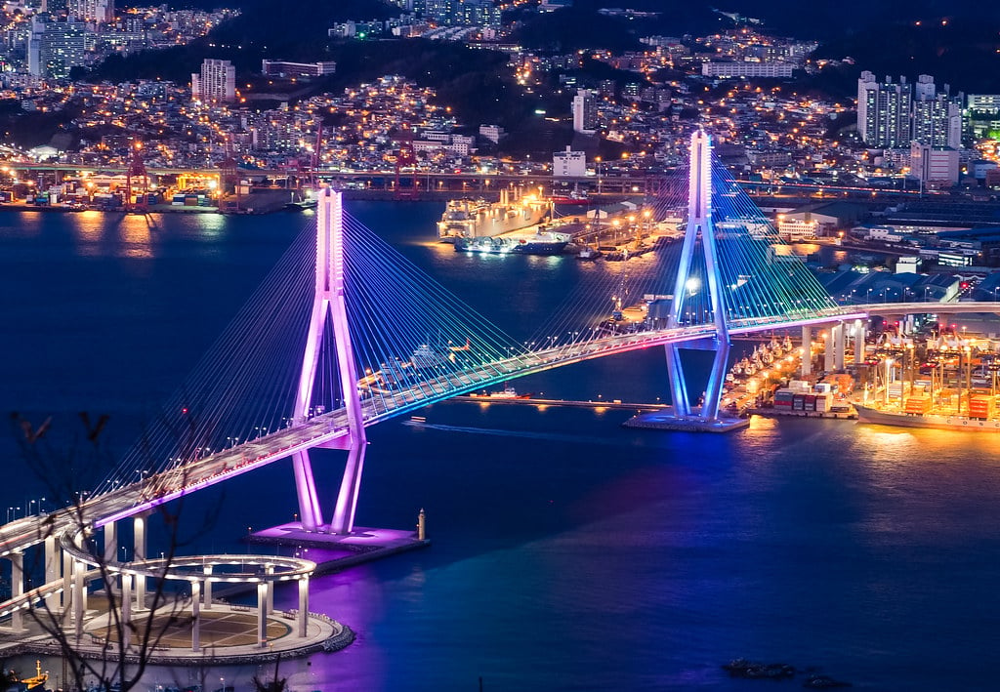

Busan City, Korea: Where Beaches Meet Culture
Busan, South Korea’s vibrant coastal city, offers a refreshing contrast to the fast-paced life of Seoul. Surrounded by mountains and the sea, Busan blends stunning beaches, bustling markets, and deep-rooted traditions. From colorful hillside villages to peaceful temples overlooking the ocean, Busan is a city that captures the heart.
First Impressions of Busan
Arriving in Busan, the salty sea breeze immediately sets the tone. The city feels relaxed yet energetic, with skyscrapers rising beside sandy beaches. Unlike Korea’s capital, Busan moves at its own pace, welcoming visitors with warmth and charm.
Public transport is efficient, making it easy to explore neighborhoods like Seomyeon, Haeundae, and Nampo-dong.
Beaches and Coastal Beauty

Busan is famous for its beaches. Haeundae Beach is the most popular, known for its long shoreline and lively atmosphere. Gwangalli Beach offers stunning night views of Gwangan Bridge, especially when it lights up after sunset.


Cultural Landmarks and Temples
Busan is home to some of Korea’s most scenic temples. Haedong Yonggungsa Temple, perched along the coastline, offers breathtaking ocean views. Visiting during sunrise feels especially spiritual.
Gamcheon Culture Village, often called the “Machu Picchu of Busan,” features colorful houses, murals, and art installations winding through narrow alleyways.
Street Food and Local Markets
Food lovers will fall in love with Busan. Jagalchi Fish Market showcases Korea’s seafood culture, with fresh catches prepared on the spot. Gukje Market and BIFF Square are perfect for sampling street food like hotteok, fish cakes, and spicy tteokbokki.
Must-Try: Busan-style hotteok filled with seeds and brown sugar—crispy, sweet, and unforgettable.
Nightlife and City Lights
At night, Busan transforms. Beachside cafes glow with warm lights, rooftop bars overlook the sea, and the city skyline reflects on the water. Gwangalli’s nighttime atmosphere is perfect for relaxed walks and late-night conversations.
Travel Tips for Busan
- Best Time to Visit: April–June and September–October
- Getting Around: Subway and buses are tourist-friendly
- What to Wear: Comfortable shoes for hills and markets
- Budget: Affordable food and transport compared to Seoul
Busan is a city that offers both relaxation and discovery. Whether you’re watching waves crash along the shore, wandering through artistic neighborhoods, or savoring fresh seafood, Busan leaves you with memories that linger long after you’ve left.
Back to Blog